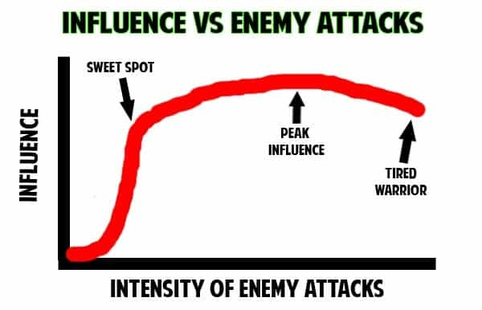
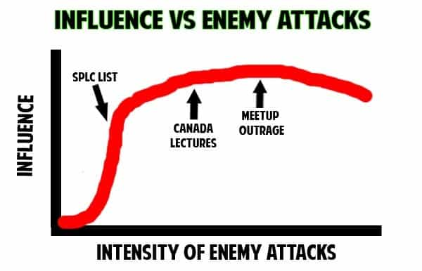

Daryush "Roosh" Valizadeh created ROK in October 2012. You can visit his blog at RooshV.com or follow him on Twitter and Facebook.


Many men want the influence of being followed by a great mass of people without understanding the costs to gaining that influence, not just from a fame standpoint, where you lose your privacy, but also an adversarial standpoint, where your influence starts to encroach on the interests of powerful groups. I have learned firsthand that past a certain point of influence, you will suffer exceptionally damaging attacks that don’t offer a proportional increase in influence. The “curve of influence” dictates that you should stop attempting to increase your influence past a certain point.
Every day, a man somewhere begins a journey at gaining influence. He uses his existing talent and experience to produce articles, videos, podcasts, or tweets. The early stages will be rough as his work will not be readily rewarded with influence, but if he persists, he will eventually cross a threshold where his influence rises rapidly and his following becomes dedicated. Soon, his influence begins stepping on the toes of other people, especially if he’s a dissident that is not controlled by the mainstream establishment. He will then be attacked.
The creator is happy with attacks, because it causes his influence to rise, earns him more money, and gives him the recognition that is natural for the ego to crave, but the attacks are likely to increase in intensity to the point where he now has to dedicate more time at defending against them instead of producing the work that gained him influence in the first place. Soon, his influence starts going down as his output becomes entirely framed by his enemies and no longer provides value to his core audience.
Here is a graphical representation of how this looks:

The sweet spot is the point where the creator has high influence but sustains a minimum exposure to attacks. If he seeks higher levels of influence, he must then engage with the enemy. This increases his influence further, but only by a small degree. He continues until hitting peak influence, which is no more than 20% higher than the influence he had at the sweet spot, but this comes at a heavy price of being attacked more regularly. The creator’s existence now consists mostly of responding to the attacks instead of producing work. This causes him to lose influence.
My creator career fits this curve. There are three notable attacks I’ve sustained: (1) being placed on the Southern Poverty Law Center misogynist list in 2012, (2) getting attacked by Canadian mayors in 2015, and (3) having to shut down my meetups due to worldwide outrage in 2016.

I approached the sweet spot with the SPLC denouncement, surpassing it three years later during Canada. The meetup outrage was my moment of peak influence. Every man has a limit to the influence he can gain, and by continuing on the path I was on, my influence would actually decline. So I ignored my ego’s call for more influence. Otherwise, there is a fair chance I’d be dead right now, because my ego would have convinced me that I’m not truly influential unless people are trying to kill me. That did not seem like a productive outcome.
The curve doesn’t account for great personal costs in seeking influence. Once the attacks against you are ramped up, you become less able to produce the work that you love and instead become more paranoid and jaded. The moment you need to hire bodyguards to ensure your personal safety, or when you have to study operational security tactics written by former CIA agents, is when you know you’re close to your peak influence.
The solution is not to pass the sweet spot. This means you must purposefully take actions that limit your influence by using enemy attacks as an indicator of where you stand. If attacks against you are increasing, you are proceeding on the curve. If the attacks against you are stable or decreasing, you are not moving on the curve. I have moved leftward on the curve since the meetup outrage by not holding events, not trolling on hot-button issues, reducing my profile on social media, and not actively trying to produce viral content. Taking these measures is quite hard for my ego to accept, because I know that if I do an event tomorrow, there will be spectacular riots that will shoot my name to the top of the news headlines. It’s imploring me to go through the entirety of the curve, but I understand that listening to it will prevent me from creating the work I like in the first place.
I guarantee you that not a single creator will follow my suggestion and purposefully limit their influence. Getting attacked by the enemy is extremely validating as you begin to judge your self-worth based on how often people come after you, but within that lies the paradox that your influence will actually decline as you become more of an entertainer than a thought-leader. Even though I understand this, a part of me still craves that moment of peak influence and the intoxicating effect of when the eyes of the whole world are upon me. Time will tell if I can avoid that temptation.
This article was originally published on Roosh V.
Read More: How To Influence People In The Modern Era